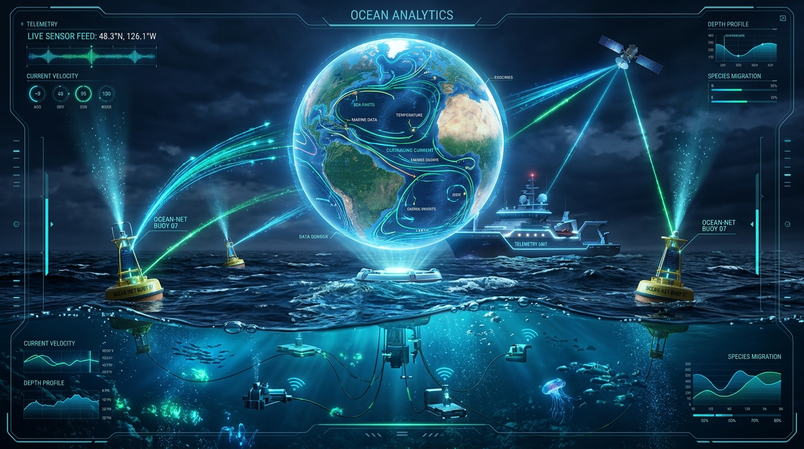

Autonomous Ocean Intelligence &
Real-Time Coastal Telemetry
MarineMetrics bridges orbital satellite feeds, edge-AI sensor buoys, and predictive ocean acoustics to monitor illegal fishing, detect chemical runoff, and protect 7,500+ km of Indian coastline in real-time.

The Critical Ocean Crisis Facing Our Maritime Borders
Traditional oceanic monitoring relies on delayed manual sampling, disconnected maritime databases, and fragmented surveillance, leaving millions of square kilometers vulnerable.
Severe Data Latency & Silos
Coastal research institutions and maritime defense operate on isolated data repositories. Crucial environmental telemetry arrives too late to neutralize chemical spills or ecosystem collapses.
Invisible Microplastic & Toxic Plumes
Plastics and industrial effluents disperse rapidly along deep currents without continuous tracking, destroying coral reef nurseries and contaminating commercial seafood supply chains.
IUU Fishing & AIS Transponder Spoofing
Illegal, Unreported, and Unregulated (IUU) fishing vessels intentionally disable AIS tracking beacons inside restricted Indian Exclusive Economic Zones (EEZ), eluding maritime patrol.
Coral Bleaching & Marine Hypoxia
Global marine heatwaves generate sudden deep-sea "dead zones" where dissolved oxygen plummets. Coastal aquaculture suffers catastrophic financial loss without early predictive warnings.
Our Provided Solution: An Integrated Ocean Sentinel
MarineMetrics combines low-cost solar-powered buoy mesh networks with edge-AI anomaly detection and synthetic aperture radar (SAR) to deliver instant, actionable ocean intelligence.
Smart IoT Buoy Mesh Network
Multiparametric sub-surface sensor arrays stream continuous pH, dissolved oxygen, salinity, turbidity, and sea surface temperature with sub-second transmission via LoRaWAN and satellite downlink.
Orbital Computer Vision & SAR
Deep learning models process Sentinel-1 SAR and Sentinel-2 multispectral imagery to map microplastic vortexes, detect dark vessels turning off AIS beacons, and trace offshore petroleum spills.
Predictive Marine Health Index (MHI)
Proprietary temporal forecasting algorithms simulate 72-hour coastal vulnerability, giving coastal aquaculture farmers and forest departments early warning before algal blooms trigger mass die-offs.
Rapid Incident Response Dispatch
Automated escalation engine pushes geo-fenced alert packets to the Indian Coast Guard, state fisheries, and marine sanctuaries via secure WebSockets, emergency SMS, and public REST APIs.
Ruggedized Multi-Depth Telemetry Pod
Designed for open Arabian Sea and Bay of Bengal conditions with galvanic isolation and antifouling copper-nickel sensor sleeves.
- Continuous Dissolved Oxygen & pH sampling at 10-second intervals
- Solar + wave energy kinetic harvesting for 24/7 continuous duty cycle
- Onboard cryptographic chip verifying telemetry authenticity against tampering
Convolutional & Temporal Intelligence
Dual-stage inference pipeline executing lightweight edge models on buoys and heavy transformer vision models on cloud clusters.
- 99.4% precision in distinguishing oil slicks from organic algal bi-products
- Autonomous synthetic AIS path reconstruction for ghost vessels
- Instant inference speed under 45ms per multispectral satellite tile
Sovereign Maritime Command HUD
Designed for coastal command centers, state fisheries ministries, and Coast Guard patrol vessel helms.
- Geospatial 3D interactive heatmaps of coastal waters
- Real-time push notifications over encrypted WebSockets
- One-click export of formal SIH / maritime incident reports
How It Is Going To Happen: The End-to-End Pipeline
A battle-tested 4-phase architectural pipeline delivering from raw ocean currents to emergency command desks in under a second.
Multi-Vector Ocean Data Ingestion
Phase 1 • AcquisitionDeploying autonomous sensor buoys equipped with multiparameter probes across critical coastal choke points, complemented by European Space Agency Sentinel-1/2 SAR optical passes and terrestrial AIS radio receivers.
Edge Cleansing & Telemetry Synchronization
Phase 2 • Pre-ProcessingHigh-frequency raw data undergoes Kalman filtering, tidal calibration, bio-fouling drift compensation, and geographic coordinate alignment right on local edge gateways before uplink, minimizing bandwidth costs.
Neural Anomaly Detection & Marine Health Index
Phase 3 • AI CoreOur twin neural models execute: A spatial computer vision model identifying surface slicks and dark ships, coupled with an LSTM recurrent network calculating the unified Marine Health Index (MHI) to predict hypoxia and coral bleaching 72 hours out.
Actionable Command & Stakeholder Dispatch
Phase 4 • DeliveryActionable threat indices trigger automated geo-fenced bulletins to Indian Coast Guard tactical units, SMS advisories to local fishing cooperatives in regional languages, and live streaming to government dashboard APIs.
Meet Team Sea & Syntax
A passionate group of developers, data engineers, and hardware architects bringing cutting-edge technology to India's marine conservation challenge.
Sumit Sharma
Spearheading system architecture, end-to-end integration, real-time WebSocket pipelines, and SIH project strategy.
Aarav Kapoor
Developing deep learning satellite SAR segmentation, YOLO dark vessel detection, and LSTM marine time series models.
Rohan Verma
Engineering rugged submersible buoy micro-controllers, LoRaWAN mesh transmitters, and multi-sensor calibration.
Priya Nair
Crafting interactive radar dashboards, Deck.gl spatial mapping, emergency alert workflows, and responsive visual systems.
"Bridging high-tech lines of syntax with deep ocean depths to protect marine biodiversity."
— Team Sea & Syntax Philosophy